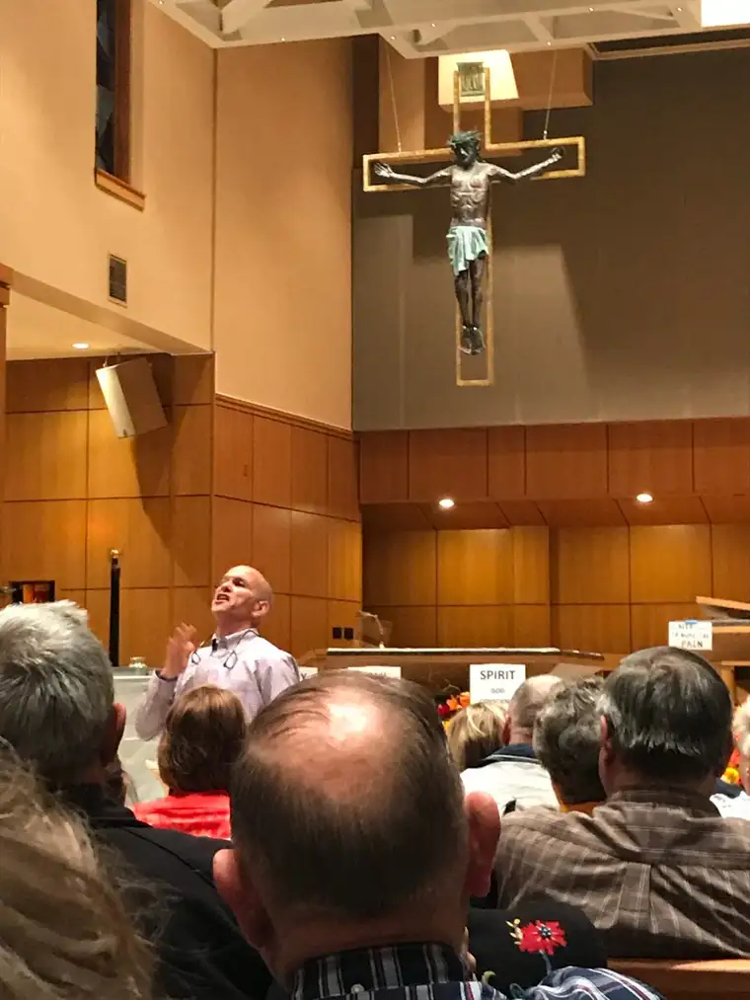
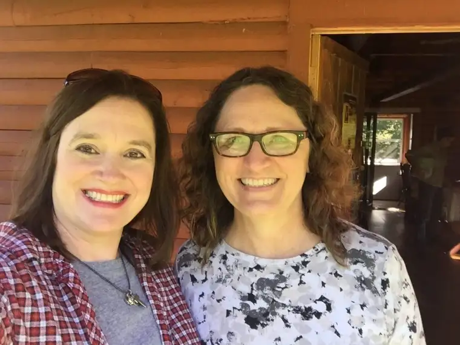

First off, I wasn’t supposed to even be at this parish mission.
My friend Madonna had invited me to the four-day event, but each night but one included a commitment of another sort. Only one day held out the possibility I could attend.
But the day before, an unexpected deadline came and I saw my world-as-planned crashing down.
“I’m sorry, Madonna. I just don’t think I can do it.”
Part of the dilemma was that I would be hosting our faith-sharing group at my house earlier the day of the mission, and, with the deadline now in the mix, too, I knew something would need to go. Maybe everything but the deadline, which, on its own, seemed impossible to meet.
When I told Madonna about my needed change of plans, she was nothing but generous.
“No worries. I am confident that the message of the Mission will be received by those God wants to attend. My mission is to invite and leave the rest up to God,” she said, adding, “No pressure. No guilt. He just wants you to know tonight that you are loved. Rest in His love for you and ask Him to help lift your burdens. Sleep well, my friend.”
I can’t tell you what a gift that was in that moment of feeling heavy laden. Just after her note, she went a step further, offering to host our faith-sharing group instead, so I would have time to work. I hesitated, then realized what a blessing it would be to have time to focus on what seemed most urgent. My hosting face would be stressful at best. That wasn’t at all what I’d wanted.
“Just say the word and send out the memo (to the others),” she wrote. “I’m here to help.”
She did end up covering for me, and I worked hard that next day to reach the deadline. It was a beautiful day outside and I lamented being stuck inside instead, but as I checked things off my to-do list one by one, I began to feel relief wash over me.
By early evening, I was done, and I realized I’d have just enough time to get myself ready and to the mission — something I couldn’t have imagined just 24 hours earlier. But, thanks to a friend, it suddenly was possible.
It was with joy that I walked into St. Joseph’s in Moorhead, my hard work behind me. I was in a grateful, receptive place to hear the message Deacon Ralph Poyo had for me and the others. He would focus on the Holy Spirit, he said. I couldn’t help but think how ironic, since it seemed pretty obvious to me by then that if not for the Holy Spirit, I wouldn’t even be sitting there.
I don’t think it’s even possible to adequately write a piece that justifies the gift of that night, and the powerful, moving thoughts that came from it. So I won’t try. Instead, I’m going to share some of my notes. You’ll have to read between the lines, but I hope something here resonates. If you want to see Deacon Ralph in action, you can find his videos, like this one, online.

Notes from Deacon Ralph Poyo’s presentation:
- God has given us the Holy Spirit so we can get back what we’ve lost.
- The truth of our entire lives is to love and be loved.
- Satan won’t make it easy for any person in this room to find God. Satan’s great at setting traps. Beware!
- We must learn how to live a spiritual life physically.
- We have to ditch everything that takes us away from God.
- To experience authentic love is to experience pain. Look at the cross.
- The sin of a family travels from one generation to the next.
- Our relationship with God isn’t just a personal relationship; it’s a nuptial relationship.
- God sent us the Holy Spirit so we could feel a constant hug.
- The Spirit is here to take us by the hand and help us.
- Too often, we play Satan’s game by trying to be in control.
- God knows we’re good people — he died for us — but he also knows we’re bound. He alone can unbind us.
- We are so committed to the sin of self-protection. This keeps us bound.
- We could do all kinds of nice things and not end up in the arms of God.
- The only way you can overcome an addiction is love.
- I overcame my addiction (pornography) because I learned to dispose my heart to God, and he changed me.
- When you don’t know God, you don’t feel the separation from God that sin leads to.
- Sacraments are the weapons of the Church!
- When we die, God will simply honor the desires of our hearts (regarding where we go from there)
- God created you so you would make his heart your home.
- God wants to be close to you, but the question is, do you want to be close to God?
- There is no evil so big in the world that God cannot overcome it.
The night filled my weary soul with hope. Much of this came from Deacon Ralph, it’s true, but I would be remiss in not saying that it started before I even arrived. It began late the night before, when I sent out an unintended cry for help to a friend, expecting nothing other than sharing, and finding love on the other end, and the Holy Spirit shining brightly through her, calling me closer into the heart of God.

Q4U: What or who has called you closer into the heart of God this week?